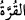
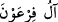

evlâd ediniriz, dedi. Halbuki onlar (işin sonunu) sezemiyorlardı.
“Firavun’un karısı” Âsiye binti Müzâhim b. Ubeyd b. Reyyân b. Velîd, tabuttan
Mûsâ çıkarılırken Firavun’a: “Benim ve senin için göz aydınlığıdır!” (dedi); çünkü
onu görünce sevmişlerdi.
Âsiye’nin büyük dedelerinden birisi olan Velid, Yusuf Sıddîk (a.s.) zamanında Mısır
Firavun’u idi. Firavun’un karısının İsrâiloğullarından ve Mûsâ (a.s.)’ın kabilesinden
olduğu söylenir. Süheylî’nin naklettiğine göre ise Âsiye, Mûsâ (a.s.)’ın teyzesi olup
kadınların en hayırlılarından idi.
Kâşifî der ki: Yâni bu çocuk, benim ve senin göz aydınlığındır. Çünkü onun sâyesinde
kızımız şifâ buldu.
“__WORD__ kelimesinin açıklaması daha önce defalarca geçti.
Hadiste şöyle denilmiştir: “Firavun Âsiye’nin bu sözüne karşılık “O, senin için göz
aydınlığıdır; benim için değil” demiştir. Şâyet Firavun, “Benim için de göz aydınlığıdır”
deseydi, dediği gibi olurdu ve Allah, Âsiye’ye hidâyet ettiği gibi, ona da hidâyet
ederdi.”[89]
Âsiye, Mûsâ ile ilgili düşüncesini gerçekleştirmesi konusunda Firavun’un kendisine
yardım etmesini sağlamak maksadıyla ona saygı için çoğul sîgası ile hitab etti ve “O’nu
öldürmeyiniz; belki bize faydası dokunur...” dedi. Yâni belki bize bir fayda ulaştırır.
Bolluk ve bereket emaresi alnında aşikârdır. Çünkü o, Mûsâ’nın tükrüğünün cilt
hastalığını iyileştirdiğini, kendi baş parmağını emerek süt ihtiyacını karşıladığını ve iki
gözünün arasından bir nur çıktığını gördü ki bunu ondan başkası görmemişti.
Büyüklerden biri şöyle demiştir: Peygamberlerin ve evliyânın yüzleri, Allah’ın zâtına
ve sıfatlarına âid ilâhî nurların aksettiği yerlerdir; bu nurlardan müminler de kâfirler de
faydalanırlar. Zira insanlar hakîkatını bilemeseler de, bu nurlarda, iyiyi kötüden ayıran
pek kıymetli bir husûsiyet ve ilâhî bir haz vardır. Dolayısıyla âşık kimseye gereken;
Allah’ın seçkin kullarının yüzlerindeki bu hak nurlarını, Âsiye’nin gördüğü gibi, yakîn
derecesinde bir bilgi ve îman ile görmek ve müşâhede etmektir. “Kim onları görürse,
Allah’ı hatırlar” sözü, böyle kimseler hakkında söylenmiştir.
Âsiye “ya da onu evlâd (oğul) ediniriz, dedi.” Zira Mûsâ buna lâyıktır ve Firavun’un
da bir erkek çocuğu bulunmamaktaydı. “Halbuki onlar (işin sonunu) sezemiyorlardı”
yani, yanıldıklarını anlamıyorlardı.
Bu cümle, “__WORD__ kelimesinden haldir. Takdiri şöyledir: Firavun’un âli (kan
akrabaları) sonunda bir düşman ve bir üzüntü olacak bir çocuğu aldılar. Âsiye, şöyle
şöyle dedi. Ancak onlar çocuğu alırlarken, ondan fayda umarlarken ve onu evlat
edinirlerken büyük bir yanılgı ve hata içinde olduklarının farkında değillerdi.
İbn Abbâs der ki: Allah’ın düşmanı Firavun da Mûsâ (a.s.) hakkında karısı Âsiye’nin
dediği gibi “Belki bize bir faydası dokunur” deseydi; Allah onu da ondan
faydalandırırdı. Ancak o, Allah’ın kendisine yazdığı şakâveti buna tercih edip hidâyeti
reddetti.